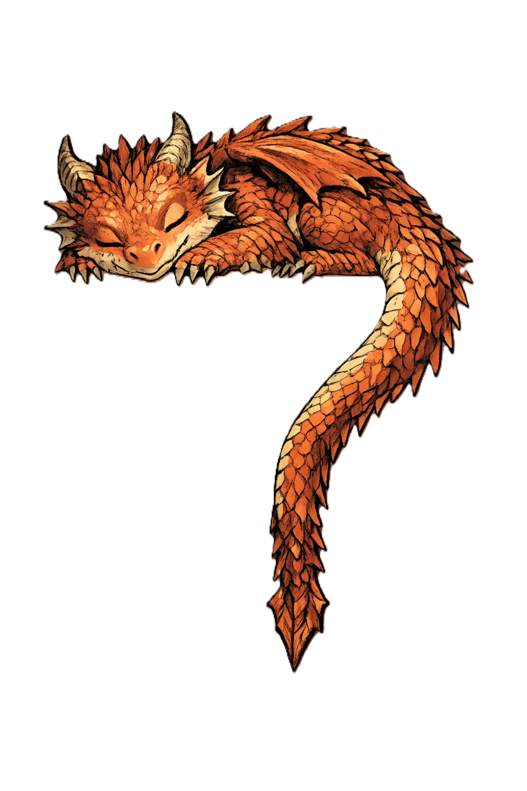
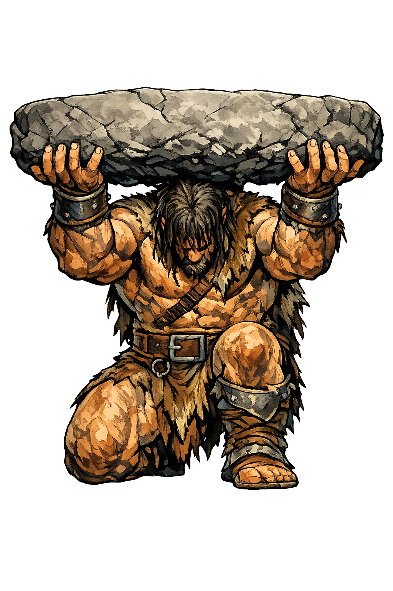
1. Introduction — What Solo Play Is
Solo D&D is a way to experience the world’s most famous tabletop role‑playing game entirely on your own, without a Dungeon Master or a group of players. In this style of play, you become both the hero of the story and the engine that drives the world forward. It’s a space where you can explore freely, experiment boldly, and learn the game at your own pace.
Playing solo removes pressure and expectations. You don’t need to coordinate schedules or wait for a group to gather. You decide the tone, the rhythm, and the direction of the adventure. Whether you want to dive deep into roleplay or test a new character build, solo play gives you the freedom to shape the experience exactly as you like.
2. Start Your Adventure — Create Your Character
Every solo journey begins with a hero. Before you step into the world, you’ll create a character who reflects the kind of story you want to tell. LoneForge gives you full control over race, class, background, and ability scores, allowing you to shape a hero with depth, purpose, and personality.
Character creation in solo play isn’t just about numbers — it’s about defining the tone of your adventure. A wandering ranger tells a very different story from a disgraced noble or an ambitious young wizard. Your choices here set the stage for everything that follows.
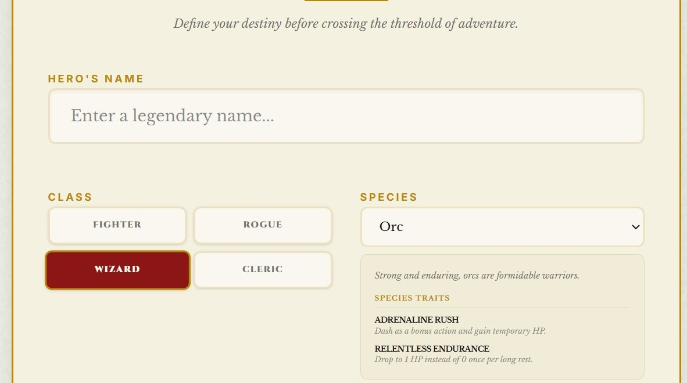
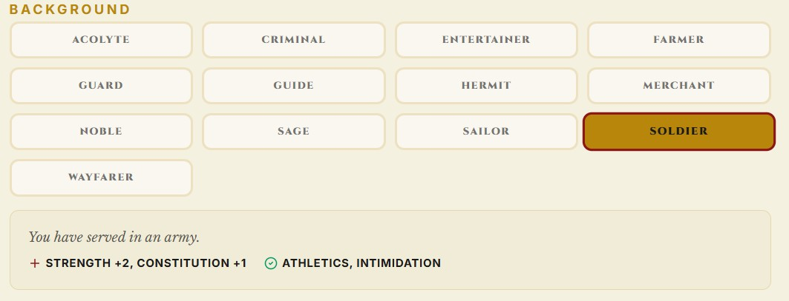
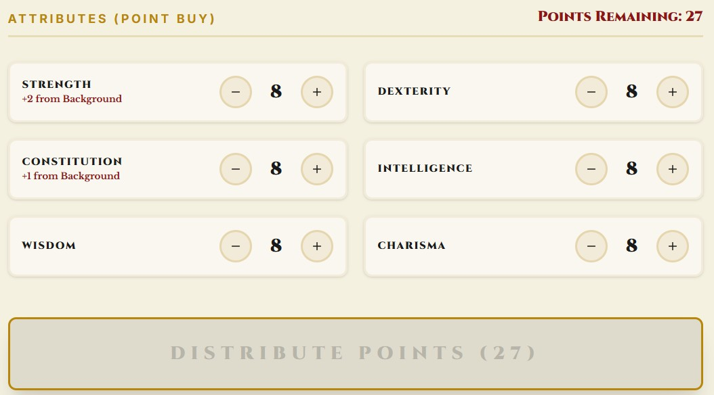
Choose a Race and Class
These two choices define your hero’s identity and abilities. Think about the kind of story you want to explore: a stealthy rogue navigating political intrigue, a paladin seeking redemption, or a druid wandering ancient forests.
Select a Background
Your background adds flavor and direction. It gives your character a past — something to build on as the story unfolds.
Assign Ability Scores
In solo play, ability scores matter even more. They shape how you interact with the world, how you solve problems, and how you survive unexpected challenges.
Example
Arlen, a human ranger, begins his journey with a simple goal: track down the creature that destroyed his village. His high Wisdom helps him navigate the wilderness, while his modest Charisma often leads to awkward encounters in town. These strengths and flaws shape the story from the very first scene.
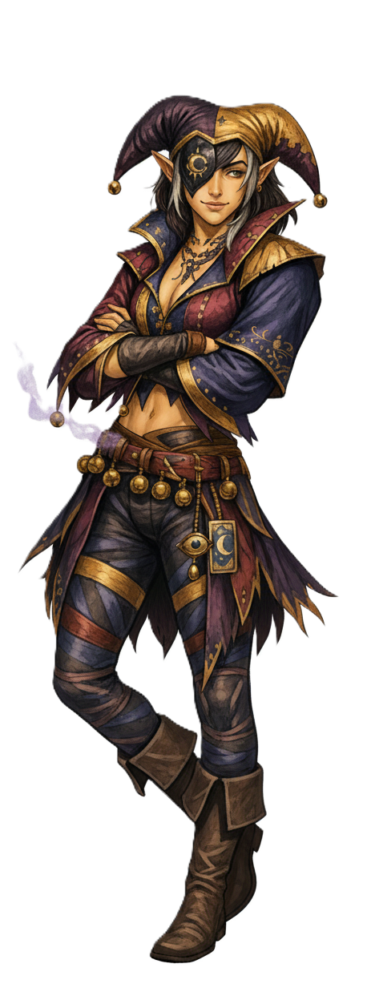
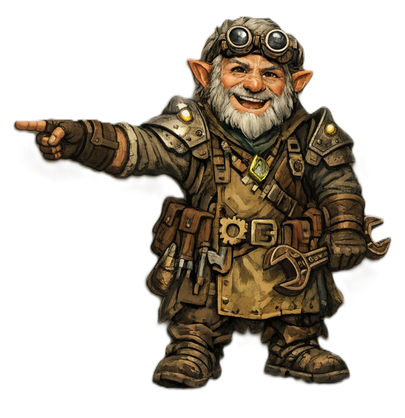
3. Ask the Oracle — Let the Story Begin
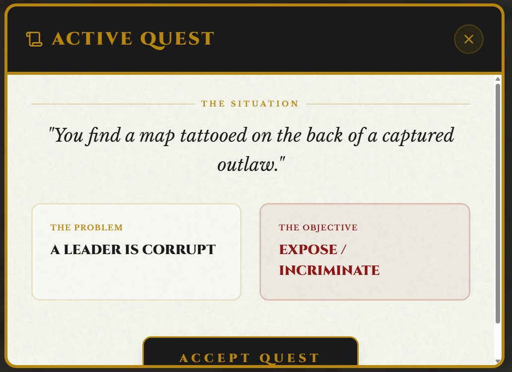
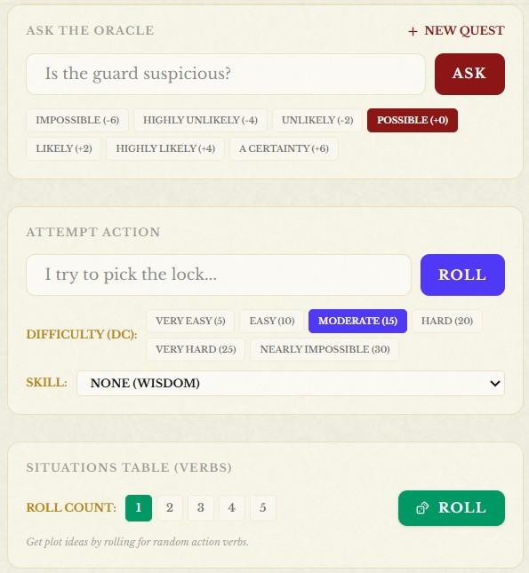
Once your character is ready, the adventure begins immediately. LoneForge generates a starting quest for you, giving your hero a clear first step and pulling you straight into the action. If the quest doesn’t inspire you, you can create a new one at any time from the Narrative section — the story is always in your hands.
If you prefer a more open beginning, you can simply choose a location within your setting and place your character there. Use the Settlement Generator to immerse yourself in a village, town, or city, then start interacting with the world around you. Explore local buildings, talk to NPCs, gather rumors, or pick a destination and set out on the road. The Wilderness tools let you generate multi‑day journeys across different biomes, each filled with discoveries and unexpected events.
A classic approach is to base your character in a small settlement and give them a local quest‑giver — a noble, a priest, a guildmaster, or any important figure. From there, the world naturally expands as you follow leads, uncover mysteries, and react to whatever the Oracle reveals.
Whenever you need information, context, or a twist, ask the Oracle simple yes/no questions. Its answers guide the flow of the story, while the Situation Table helps you generate scenes, complications, and narrative sparks that keep the adventure alive and unpredictable.
4. Explore the World — Your Adventure, Your Way
Once you’ve chosen how to begin, your story can unfold in any direction you imagine. Your character might lose themselves in the bustle of a thriving city, navigating events, encounters, rumors, and opportunities. They might set out across untamed lands, traveling through wild biomes filled with danger and discovery. Or they might descend into an abandoned dungeon, uncovering secrets long forgotten.
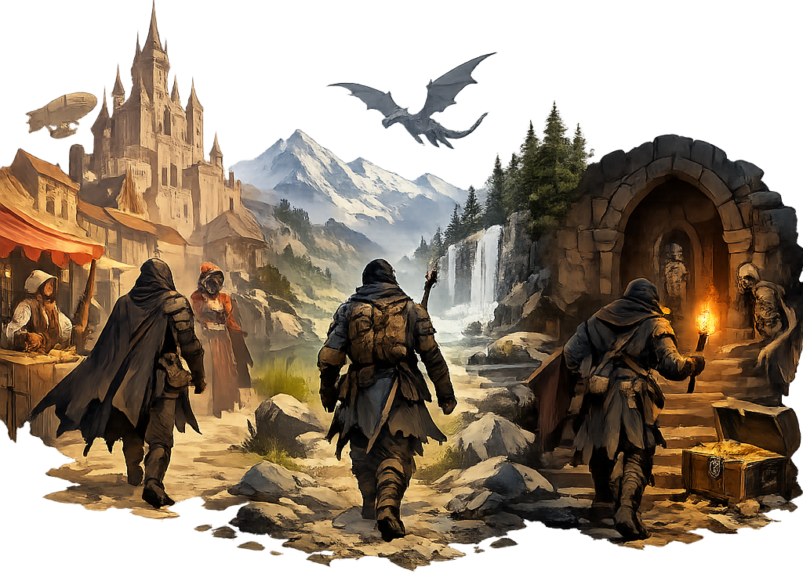
The key to solo play is freedom. LoneForge isn’t a rigid, pre‑written story — it’s a toolbox designed to help you create your own unique adventure. You decide what your hero does, where they go, and what kind of tale you want to experience. The system simply gives you the means to bring that vision to life.
The Adventure section contains everything you need to explore the world: settlements, wilderness travel, dungeons, events, and more. And whenever you need additional support, you can draw from the Bestiary, Items, NPC Generator, or any other tool. Whether you need a monster, a treasure, or a new character to meet, LoneForge is ready to help you shape the next moment of your journey.
Your imagination leads — LoneForge follows.
5. Encounters & Combat — Facing the Unknown
As you explore the world, your character will inevitably face challenges — tense negotiations, dangerous creatures, unexpected threats, or moments where a single decision can change everything. In solo play, encounters are the heartbeat of the adventure, shaping the story through action and consequence.
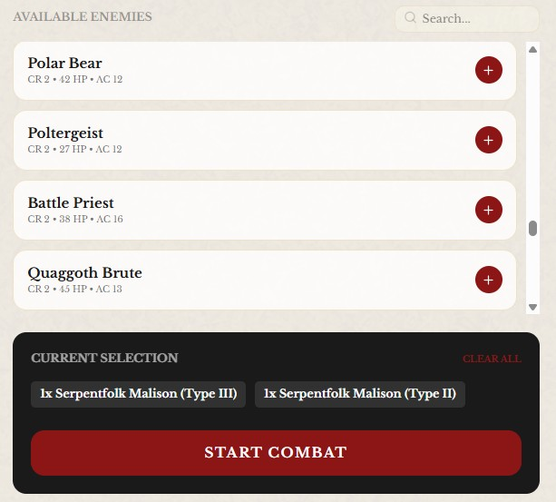
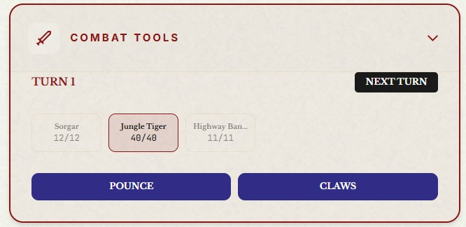
When a situation calls for combat, LoneForge helps you run the encounter smoothly. You can create a battle scenario by choosing the enemies your hero will face, and the system manages turn order, enemy behavior, attack types, and hit points. This lets you focus on the flow of the fight rather than the bookkeeping behind it.
Combat in solo play is meant to feel dynamic and reactive. You decide how your character acts, what risks they take, and how they adapt to the unfolding battle. LoneForge handles the mechanics, but the strategy — and the story — remain entirely yours.
Work is underway to expand combat even further, introducing saving throws, more nuanced enemy actions, and additional tactical elements. The goal is to make every encounter feel alive, challenging, and worthy of the tale you’re telling.
6. Record Your Story — Build Your Adventure Journal
Every great adventure deserves to be remembered. In solo play, your notes become the living memory of your journey — the place where characters grow, mysteries unfold, and the world takes shape one discovery at a time.
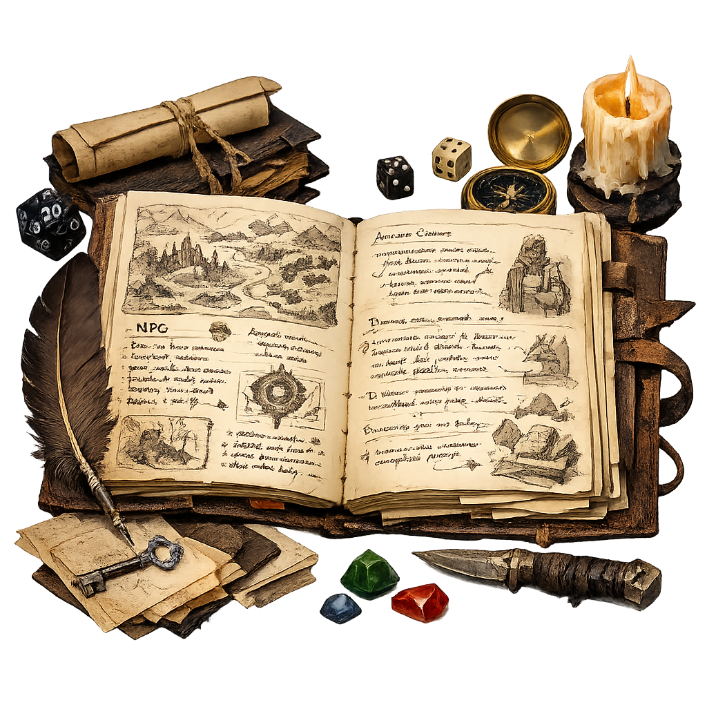
LoneForge’s Notes section is more than a simple text box. It’s your campaign journal, your personal chronicle, the book of your hero’s life. Here you can record important events, track NPCs, document clues, write down theories, or simply reflect on what your character is feeling after a difficult encounter.
As both player and storyteller, your notes help you keep the narrative coherent and meaningful. They allow you to revisit past events, follow long‑term plot threads, and build a world that feels alive and interconnected. Over time, this journal becomes a unique artifact — a story only you could have written.
Whenever you need inspiration, you can return to your notes to rediscover old hooks, unresolved tensions, or forgotten promises. LoneForge gives you the tools, but the story is yours to shape, one entry at a time.
7. A Complete Example of Solo Play
To show how all the pieces come together, here’s a short example of a solo session using LoneForge. This is just one possible approach — your own adventures will take on a life of their own.
Step 1 — The Beginning
Arlen, a human ranger, arrives in the small frontier village of Brambleford. LoneForge generates a starting quest: “A local farmer reports strange tracks near the old well.”
Arlen decides to investigate. Before approaching the well, he asks the Oracle: “Is the area quiet?” → No, but... (you can add "not dangerous").
Step 2 — A Twist Appears
Arlen examines the ground. He asks: “Do the tracks look fresh?” → Yes, and.. (you can add "a complications". Using the Situation Table, he gets: “Movement — Sudden.” Something moves behind the bushes — a wounded wolf.
Step 3 — The Encounter
The wolf growls but doesn’t attack. Arlen attempts to calm it with an Animal Handling check. He sets the DC to 12 and rolls a 14 — success. The wolf lowers its head, revealing an arrow lodged in its flank.
Step 4 — Following the Lead
Arlen asks the Oracle: “Did the attacker flee toward the forest?” → Yes. Arlen attempts to follow the tracks. He sets the DC to 15 and rolls a 17 — success. LoneForge generates a short Wilderness journey: Forest biome — Event: “Hidden campsite.” At the campsite, Arlen finds broken arrows matching the one in the wolf.
Step 5 — Recording the Story
Arlen writes in his Notes:
“Day 1 — Brambleford. Investigated strange tracks near the old well. Found a wounded wolf with an arrow in its flank. Tracks lead into the forest. Discovered an abandoned campsite — signs of a hunter or poacher. Need to investigate further.”